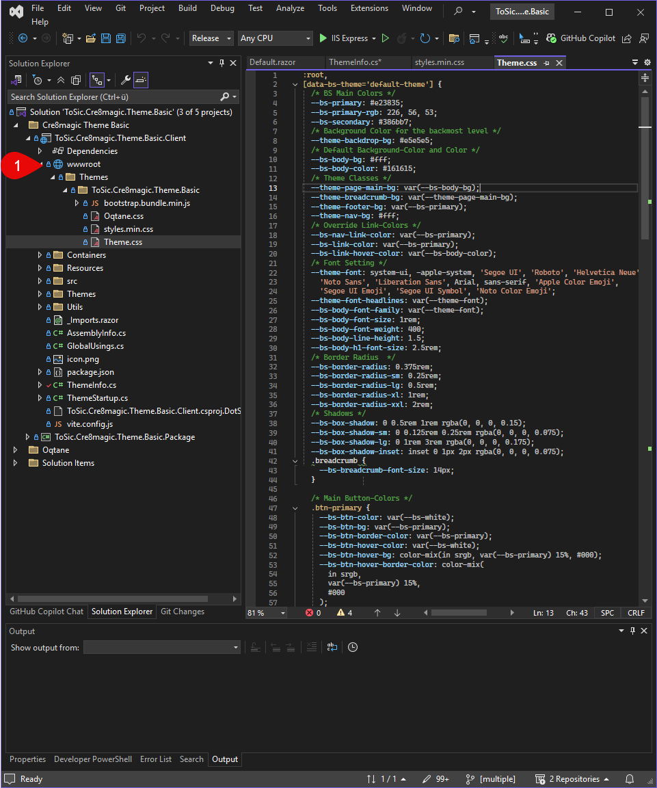
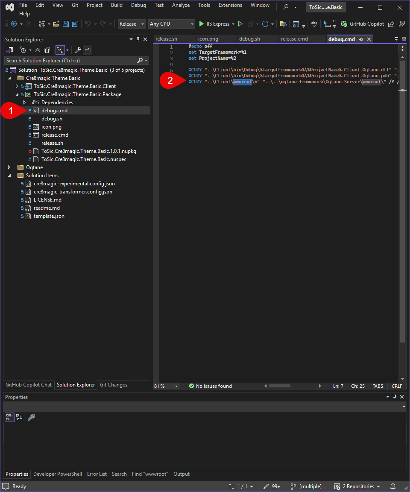

The wwwroot Folder
Tip
If you use external libraries like Bootstrap, FontAwesome, or custom JS scripts, place them in
wwwroot and reference them using the Resources list in your ThemeInfo.
The wwwroot folder is the web root directory of an Oqtane theme or web application. All files that should be publicly accessible via the browser are placed here.

Typical contents include:
- CSS files (
.css) - JavaScript files (
.js) - Images (
.png,.jpg,.svg, etc.) - Fonts (
.woff,.ttf, etc.)
For example, if you place a file called styles.min.css inside your theme’s wwwroot folder, you can reference it in your ThemeInfo.cs like this:
Resources =
[
new Stylesheet("~/styles.min.css")
]
Here, the ~ refers to the root of the wwwroot folder of the current theme or module.
Important Notes
- Only files inside the wwwroot folder are directly accessible via URL.
- Logic files, Razor components, or C# code should not be placed in this folder.
- The structure and naming inside wwwroot should be consistent and well organized.
- In Debug Build, copy the Output to the Oqtane Server
